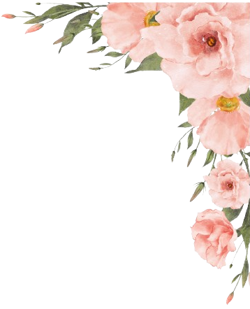
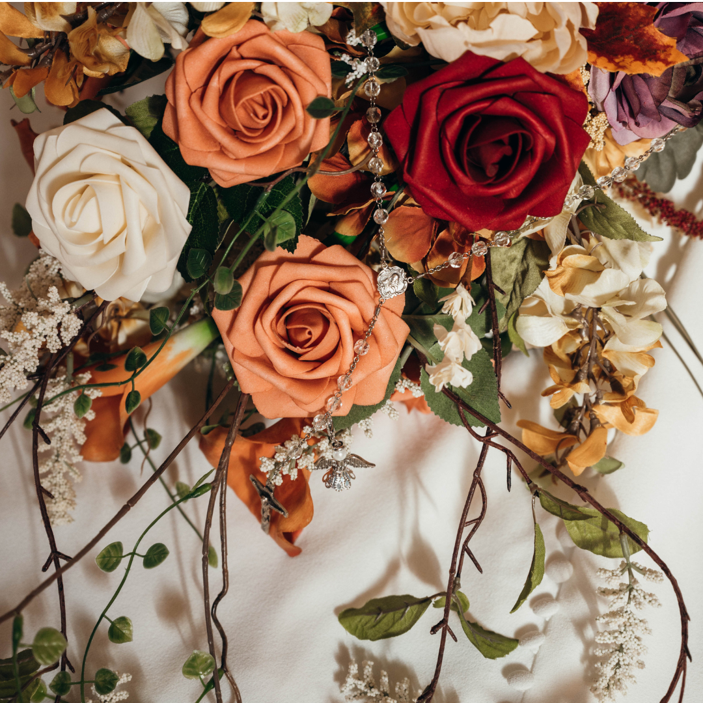

العملاء


مرحبًا بكم في [ورد القمر]، حيث نجعل مناسباتكم تنبض بالحياة من خلال تصاميم زهور فريدة تضفي لمسة من الأناقة والرقي. سواء كنت تخطط لحفل زفاف، عيد ميلاد، أو أي مناسبة خاصة، نحن هنا لنحول رؤيتك إلى واقع مبهر. نؤمن بأن كل مناسبة تستحق أن تكون ذكرى لا تُنسى، لذلك نستخدم أجود أنواع الزهور ونعمل على تصميم كل ترتيباتنا بعناية فائقة لتلائم ذوقك الشخصي. دعنا نهتم بالتفاصيل لتستمتع أنت وضيوفك بلحظات مليئة بالجمال والإبداع. [ورد القمر]، حيث تتحدث الأزهار عنك.

فريق تزيين الحفلات بالورد يقدم خدمات تنسيق وتزيين احترافية باستخدام أجود أنواع الزهور لتناسب جميع المناسبات مثل الأعراس، أعياد الميلاد، والاحتفالات الرسمية. بفضل خبرتهم الفنية، يضمنون ترتيبًا خلابًا يجمع بين الأناقة والجمال الطبيعي، ما يجعل كل مناسبة استثنائية وفريدة من نوعها.

أدوات تزيين الحفلات بالورد تشمل أواني الزهور المزخرفة، الأقفاص المعدنية، الأشرطة الملونة، حاملات الزهور، الأضواء الخافتة، والشموع العطرية. هذه الأدوات تُستخدم لإبراز جمال الزهور الطبيعية وإضفاء أجواء رومانسية وراقية على الحفلات والمناسبات الخاصة، مما يمنح كل حدث طابعًا مميزًا وجذابًا.
تزيين الحفلات بالورد شهد العديد من الإنجازات البارزة، مثل تنسيق حفلات زفاف ضخمة بأزهار نادرة، تصميم مساحات احتفالية مبتكرة بترتيبات زهور متناسقة، وتزيين فعاليات رسمية دولية بألوان وموضوعات محددة. باستخدام تصاميم مخصصة، حولوا مناسبات عديدة إلى تجارب فنية تنبض بالحياة والجمال الطبيعي.
إضاءات تزيين الحفلات بالورد تلعب دورًا حيويًا في إبراز جمال الترتيبات الزهرية. تشمل الإضاءات الخافتة، أضواء LED المخفية، الشموع العطرية، وسلاسل الأضواء الناعمة. تعمل هذه الإضاءات على خلق أجواء رومانسية وراقية، مما يعزز تأثير الزهور ويضفي لمسة من السحر على المكان والمناسبة.


أماكن تزيين الحفلات بالورد تتنوع بين القاعات الفخمة، الحدائق المفتوحة، الشواطئ، والفنادق الفاخرة. يتم تصميم التزيين ليتناسب مع طبيعة المكان، من الزهور المتدلية في القاعات المغلقة إلى الأقواس الزهرية في الهواء الطلق، ما يمنح كل موقع طابعًا فريدًا وجاذبًا.